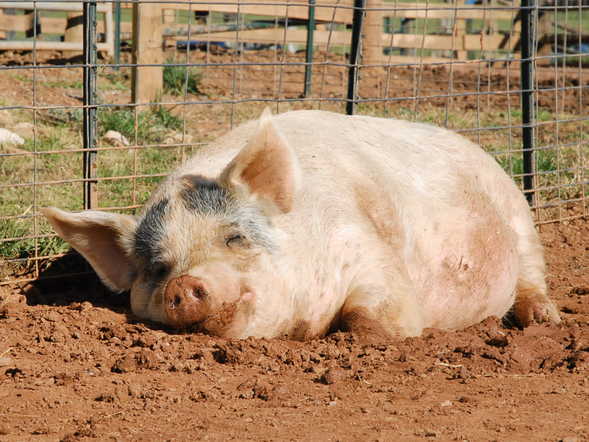

super świnka

Śpiąca świnka
Witamy na naszej stronie dla chodowców świnek! Zapraszamy do oglądania zebranych przez nas materiałów i ciekawostek. Dlaczego świnki są super? Bo są różowe i chrumkają.
Przewijając stronę w dół, będziesz miał okazję poznać masę przydatnych informacji o tych przesympatycznych zwierzątkach.
Ciąża u świń trwa około 112-114 dni (3 miesiące, 3 tygodnie i 3 dni), laktacja 21-56 dni. W jednym miocie może być 8-14 prosiąt. Odłączenie prosięcia od maciory ma miejsce w wieku 12 tygodni.
Brytyjska organizacja na rzecz praw tuczników zainwestowała 100 tys funtów na... zabawki dla świń. Celem jest poprawienie warunków hodowli tych zwierząt. Według badaczy bowiem, organizm świń przebywających w nieodpowiednich warunkach produkuje kortyzol, który pogarsza jakość mięsa.
Wykorzystanie zabawek jest częścią projektu finansowanego przez British Pig (BPEX HSE), którego celem jest poprawieniem warunków dla świń. Według najnowszych badań zwierzęta, które są stymulowane w ten sposób, produkują smaczniejsze mięso.
W gospodarstwach rolnych na terenie Wielkiej Brytanii, zwierzęta otrzymały zabawki do gryzienia - w tym liny, piłki, gumowe buty i pachołki, łańcuchy, a nawet gumowe węże zwisające z sufitu. Wielkim hitem okazał się plastikowy gadżet zwany "Porcichew", na którym zwierzęta mogą bujać się jak dzieci na huśtawkach.
Organizm niespokojnych zwierząt uwalnia więcej kortyzolu - hormonu stresu - który ma wpływ na smak mięsa. Wieprzowina z zestresowanych świń jest jaśniejsza i bardziej miękkia. Koordynator projektu dr Nina Wainwright informuje: Świnie często obgryzają ogony i uszy innych świń - co może dowodzić, że jedną z głównych przyczyn stresu jest brak przedmiotów do gryzienia. Dodaje: Jeżeli świnia jest mniej narażona na stres, uzyskujemy lepszy bekon, szynkę i wieprzowinę.
Zgodnie z nowymi przepisami, od przyszłorocznej wiosny świnie będą kontrolowane trzy razy w roku, a oceny ich samopoczucia będzie rejestrowana przez weterynarzy w bazie danych.
Znane są powiedzenia:„podłożyć komuś świnię”, „zobaczyć jak świnia niebo”, „tylko świnie siedzą w kinie”, „głupi jak świnia”... Większości z nas tucznik kojarzy się z brudnym, nieprzyjemnym zwierzęciem - a co jeśli świnia może uratować nam życie?
Z ostatnich badań polskich naukowców wynika, że świńskie DNA jest w 94 procentach zgodne z DNA człowieka. Rozpoczęto więc hodowlę trzody chlewnej, od której będzie można pobierać przeszczepy dla ludzi. Specjalna hodowla ma na calu obniżenie bariery genów immunologicznych świnia-człowiek, co w całości wyklucza ryzyko zarażenia człowieka świńskimi patogenami.
Naukowcy chcą w przyszłości przeszczepiać wątroby, nerki a nawet serca świni. Również tkanki chrzęstne i kostne mogłyby posłużyć do rekonstrukcji rozległych ubytków kostnych, a skóra mogłaby być wykorzystywana jako opatrunek biotechnologiczny. Nie tylko DNA mamy zbliżone do świń, udowodniono, że pewne mechanizmy zachowań również... Uczeni z Newcastle University przy pomocy tuczników opracowali metodę badawczą dzięki której można określić, że warunki życia mają decydujący wpływ na samopoczucie. Swoją teorie oparli na badaniach grupy świń. Eksperyment był podobny do doświadczenia z psami Pawłowa i polegał na reakcji na dźwięki. Naukowcy nauczyli świnie dwóch dźwięków, pierwszy kojarzony był z nagrodą, która było jedzenie, i drugi neutralny, nie przypominał niczego dobrego (szeleszczenie plastikowej torby).Szkolone świnie podzielono na grupy i umieszczono w „lepszych” i „gorszych” warunkach.
Według kierującej badaniami dr Catherine Douglas, wyniki okazały się fascynujące: Ta trzoda chlewna, która mieszkała w warunkach „lepszych” (cieplejsze wnętrze, dużo słomy) niemal bez wyjątku z optymizmem zareagowała na to, co może znaczyć nowy dźwięk. -”Podeszły do nas, najwyraźniej licząc na przysmak" - opowiada badaczka. Natomiast świnie mieszkające w „gorszych” warunkach (ciasne zimne wnętrza) reagowały z pesymizmem na wszystko co działo się dookoła.
Douglas zwraca uwagę, że taką samą reakcję często obserwujemy u ludzi, których samopoczucie wpływa na sposób oceny niejednoznacznych zjawisk. Czasami miewamy gorsze dni, jesteśmy np. zestresowani i kiedy w takim stanie mamy np. pójść do pracy, jesteśmy zniechęceni, znudzeni i właściwie każda czynność może okazać się złem koniecznym. Natomiast kiedy jesteśmy w dobrym humorze, chętniej wykonujemy zadane nam prace, które w złym humorze wydają się nie do zrobienia.
Winston Churchil powiedział kiedyś: „Psy patrzą na nas z szacunkiem, koty z pogardą, a świnie jak na równych sobie” Przerażające? Świat idzie do przodu, medycyna ewoluuje, idąc z duchem czasu musimy być przygotowani na różne ewentualności